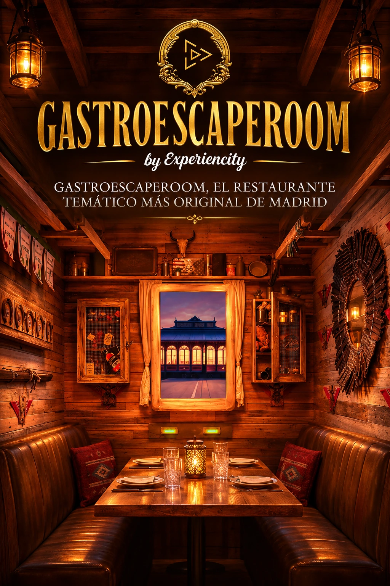

Ficha de catálogo
Gastro Escape
Experiencity
Ficha de Gastro Escape de Experiencity en Madrid, con datos de ubicación y enlaces de consulta.

Ficha de Gastro Escape de Experiencity en Madrid, con datos de ubicación y enlaces de consulta.
🍽️ ¡Todos a bordo! Un tren de época, destinos sorprendentes y una aventura donde los enigmas se resuelven entre plato y plato.
¿Alguna vez habéis imaginado viajar alrededor del mundo sin salir de Madrid? ¿Y si, además de disfrutar de una comida extraordinaria, tuvierais que resolver misterios, superar desafíos y convertiros en protagonistas de vuestra propia historia?
¡Bienvenidos a GastroEscapeRoom, una experiencia donde la gastronomía y los escape rooms se fusionan para crear un viaje completamente diferente!
En pleno corazón de Madrid os espera el Experiencity Express Train, un original restaurante temático que recrea el interior de un antiguo tren de pasajeros. Pero no se trata de un tren cualquiera...
🚂 ¡Cada vagón es un destino diferente, cada mesa es parte de la aventura y cada viaje esconde una misión que deberéis completar!
Desde el momento en que subáis a bordo, dejaréis atrás la rutina para adentraros en escenarios cuidadosamente ambientados, donde la decoración, la gastronomía y los juegos se combinan para transportaros a diferentes lugares, épocas y universos.
🌍 ¿Cuál será vuestro próximo destino?
Podréis viajar hasta el lejano Oriente en busca de la misteriosa flor de loto, recorrer el salvaje Oeste americano, descubrir los encantos de Italia o sumergiros en una exótica aventura por la India.
Pero también existen viajes mucho más inesperados...
🕵️ Convertíos en colaboradores de Sherlock Holmes en un elegante vagón inglés, disfrutad de una experiencia inspirada en la mítica serie *Friends* en Nueva York, adentraos en un animado pub irlandés entre leyendas de leprechauns o descubrid quién esconde sus verdaderas intenciones en una misión de impostores.
Y si lo vuestro son las aventuras exóticas, también podréis dejaros llevar por los encantos de la Polinesia.
¡Cada vagón cuenta con su propia ambientación, historia y desafíos, haciendo que cada visita pueda convertirse en una aventura completamente nueva!
🧩 Pero aquí hay una regla fundamental: ¡se juega mientras se come y se come mientras se juega!
A diferencia de un escape room convencional, donde el objetivo suele ser escapar de una habitación antes de que termine el tiempo, GastroEscapeRoom propone una experiencia más relajada y social, en la que los enigmas y las pruebas se integran a lo largo de una comida, merienda, brunch o cena.
Tendréis que utilizar vuestro ingenio, observar los detalles, compartir descubrimientos y colaborar para completar la misión que os haya tocado, todo ello mientras disfrutáis de una propuesta gastronómica adaptada al ambiente de vuestro vagón.
🍔 ¡Porque los sabores también forman parte del viaje!
Cada destino cuenta con recomendaciones gastronómicas especiales, pensadas para acompañar la temática y hacer que la inmersión vaya mucho más allá de la decoración.
Podréis elegir entre los diferentes platos de la carta o dejaros llevar por las propuestas especiales de cada vagón, con opciones que incluyen bebida, entrante, plato principal y postre.
La experiencia completa tiene una duración aproximada de 2 horas y media a 3 horas, ofreciendo tiempo para disfrutar tanto de la gastronomía como de los desafíos.
🎉 Una propuesta ideal para parejas, familias, grupos de amigos, celebraciones y eventos de empresa, donde la diversión, la cooperación y la buena comida se convierten en los verdaderos protagonistas.
Además, el universo GastroEscapeRoom se amplía con otras propuestas, como Ágatha, un restaurante inspirado en los grandes misterios criminales, con experiencias de investigación gastronómica anunciadas para próximas fechas.
🚉 El tren está preparado, los vagones esperan a sus pasajeros y los destinos esconden aventuras que todavía no podéis imaginar...
🔎 ¿Elegiréis descubrir una antigua leyenda, resolver un misterio detectivesco o desenmascarar a un impostor mientras disfrutáis de vuestra comida?
🎟️ ¡Preparad vuestro billete, elegid destino y subid a bordo del Experiencity Express Train!
🚂 Porque en GastroEscapeRoom el viaje no consiste únicamente en llegar a un destino... ¡sino en saborear cada momento de la aventura!